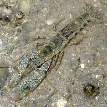
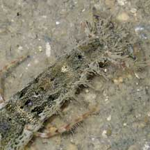
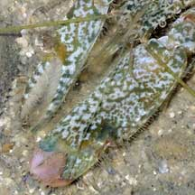
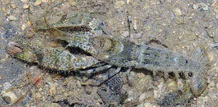
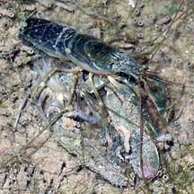
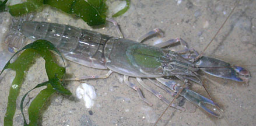
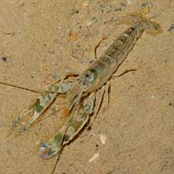

|
|
| shrimps text index | photo index |
| Phylum Arthropoda > Subphylum Crustacea > Class Malacostraca > Order Decapoda > prawns and shrimps > Family Alpheidae |
| Ornamented
snapping shrimp Alpheus sp.* Family Alpheidae updated Dec 2019 Where seen? This prettily patterned snapping shrimp with flat pincers is sometimes seen on some of our shores, in sandy areas near seagrasses and among coral rubble. It is more active at night. During the day, most remain hidden in their burrows. Features: 4-6cm.The enlarged pincer is long, narrow and flattened often with pink tips. The other pincer is also long and flattened with narrow fingers fringed with hairs. Some of these shrimps can be quite colourful with intricately patterned bodies which are rather hairy. Some have a lighter coloured band where the abdomen joins the body and a light spot near the tail. Several different species of snapping shrimps might have this appearance. |
 Pulau Hantu, Mar 07 |
 |
 |
 Pulau Hantu, Nov 09 |
 West Coast Park, Jun 02 |
|
 Changi, Jul 02 |
 East Coast Park, Nov 08 |
|
*Species are difficult to positively identify without close examination of small features.
On this website, they are grouped by external features for convenience of display
| Ornamented snapping shrimps on Singapore shores |
On wildsingapore
flickr
|
| Other sightings on Singapore shores |